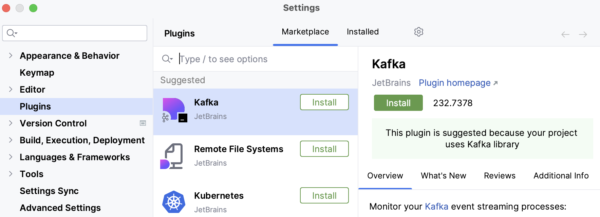
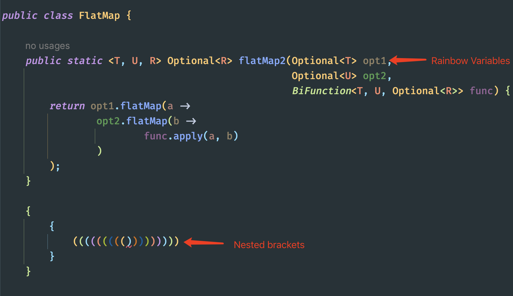
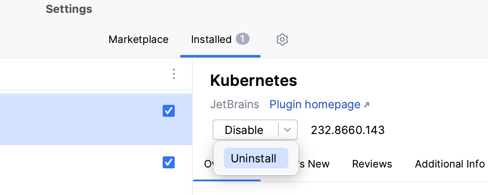

Gestión de módulos y extensiones (Plugins)
IntelliJ IDEA no se concibe como una pieza monolítica e inamovible, sino como un núcleo mínimo sobre el que se apoyan cientos de piezas independientes llamadas plugins. La idea de fondo es la misma que la de los grandes sistemas modulares: en lugar de construir un programa gigantesco que lo haga todo, se construye un corazón pequeño y estable, y todo lo demás se añade como piezas que se pueden conectar o desconectar según convenga.
Esa arquitectura modular, a la que en el apartado anterior nos referíamos al hablar de la flexibilidad del IDE, tiene consecuencias muy prácticas. El núcleo se ocupa de lo imprescindible (abrir el proyecto, gestionar archivos, coordinar el editor y el compilador) y se mantiene relativamente ligero. Las funcionalidades específicas (colorear la sintaxis de un lenguaje, conectar con una base de datos, integrarse con Git) viven en plugins desacoplados, de manera que se pueden añadir o quitar sin tocar el núcleo.
Ese desacoplamiento es lo que hace posible que IntelliJ pueda adaptarse a perfiles de usuario muy distintos con la misma instalación base. Un desarrollador que solo escribe Java no necesita los mismos complementos que quien trabaja con bases de datos o con frontend web, y gracias a los plugins no tiene que cargar con herramientas que no va a usar. La misma plataforma se transforma según lo que se le enchufe.
Para entender cómo se organiza todo esto, conviene distinguir dos universos. Por un lado están las herramientas instaladas por defecto, el conjunto de plugins que JetBrains incluye con la propia instalación y que cubren el flujo de trabajo básico: compilación, depuración y control de versiones. Forman parte del IDE de fábrica y son las que hacen que, nada más instalar, ya se pueda trabajar. Por otro lado está el JetBrains Marketplace, un catálogo en línea que aloja miles de extensiones creadas tanto por la propia JetBrains como por la comunidad de desarrolladores. La diferencia importa: lo que no trae el IDE de fábrica se busca en el Marketplace y se instala en un par de clics.
El impacto de los plugins en el ciclo de vida del IDE
Aquí llega el matiz que conviene tener siempre presente, porque la modularidad tiene un precio. Cada plugin activo consume recursos mientras el IDE está en marcha, y ese consumo se reparte por varias dimensiones:
- Memoria RAM: cada complemento se carga en memoria al arrancar el IDE. Un plugin que no se usa sigue ocupando su espacio, y acumular decenas de extensiones puede hacer que el entorno se vuelva pesado y que el sistema empiece a usar memoria de intercambio en disco, con la consiguiente pérdida de velocidad.
- Hilos en segundo plano: muchos plugins no se limitan a esperar órdenes, sino que lanzan tareas propias en segundo plano: indexaciones adicionales, comprobaciones, sincronizaciones. Todos esos hilos compiten por los recursos del equipo y, si se acumulan, pueden ralentizar el trabajo general del IDE.
- Tiempo de arranque: cuanto más complementos hay que cargar, más tarda el IDE en estar listo. En un equipo con muchos plugins, la diferencia de tiempo entre abrir IntelliJ con la colección limpia y abrirlo con una colección saturada se nota perfectamente.
Ese coste es especialmente visible en equipos con poca memoria o en aulas con ordenadores compartidos, donde el hardware no es demasiado potente y varios alumnos usan la misma máquina. En esos contextos, acumular plugins que nadie necesita se traduce en un entorno lento para todos. Gestionar bien los plugins instalados forma, por tanto, parte de las buenas prácticas de cualquier programador, igual que mantener ordenado el escritorio no es una manía estética, sino una forma de trabajar mejor.
Instalación paso a paso: Rainbow Brackets
Para empezar, conviene aterrizar el caso con un problema que todo el mundo reconoce en primero de DAW. Cuando se anidan bucles y condiciones, el código Java acumula llaves y paréntesis en varios niveles, y es muy fácil perder la referencia visual: ¿dónde cierra exactamente este if?, ¿a qué for pertenece esta llave? El resultado son errores de sintaxis difíciles de localizar y un tiempo de depuración que se dispara.
Para resolver esta situación, la alternativa pasa por un plugin sencillo y de gran impacto visual: Rainbow Brackets. Su función es colorear cada nivel de llaves, corchetes y paréntesis con un color distinto, de modo que un simple vistazo basta para saber qué bloque corresponde a cada apertura. Es un ejemplo perfecto de cómo un complemento pequeño puede mejorar notablemente la experiencia diaria.
A partir de esta base, la instalación arranca por la ventana de configuración del IDE. En Linux y Windows se accede desde File → Settings, mientras que en macOS la opción aparece como IntelliJ IDEA → Settings; en ambos casos, el atajo de teclado Ctrl + Alt + S lleva directamente al mismo sitio.
Esto nos lleva directamente a la sección Plugins, ubicada en el panel lateral de esa ventana, y a su pestaña Marketplace: el punto desde el que el IDE se conecta al catálogo de JetBrains para mostrar las extensiones disponibles.
En ese listado, basta con teclear "Rainbow Brackets" en el campo de búsqueda. Antes de pulsar el botón Install, conviene verificar el autor del plugin, una precaución que evita instalar extensiones mal mantenidas o incompatibles con la versión del IDE.

Al pulsar Install, el IDE descarga el paquete del plugin y, si la extensión lo solicita, pedirá reiniciar el entorno para que su coloreado sintáctico quede cargado. Tras el reinicio, el efecto se aprecia de inmediato: cada nivel de llaves y paréntesis se pinta con un color propio, lo que convierte un bloque anidado en algo perfectamente legible.

Desactivar y eliminar extensiones
La operación contraria también forma parte del día a día. Hay dos motivos habituales para tocar los complementos ya instalados: resolver conflictos de versiones, cuando dos plugins interfieren entre sí y provocan comportamientos extraños, y optimizar recursos en equipos compartidos o con poca memoria. En ambos casos, la primera parada es la pestaña Installed de la sección Plugins, donde se listan todas las extensiones presentes en el entorno.
A la hora de "quitar de en medio" un plugin, conviene distinguir con claridad entre desactivarlo temporalmente y desinstalarlo de forma definitiva, porque las consecuencias son distintas.
Para desactivar un plugin de forma temporal, basta con desmarcar el checkbox que acompaña a su nombre y aplicar los cambios. Lo importante de esta opción es lo que hace por debajo: deja de ejecutar el complemento y no lo carga en memoria al arrancar el IDE, pero conserva sus archivos en disco. Es decir, el plugin deja de consumir recursos inmediatos, pero sigue disponible para reactivarlo con un simple clic, sin tener que volver a descargarlo. Es la jugada ideal cuando se sospecha que un plugin es el causante de un problema: se desactiva, se comprueba que todo vuelve a funcionar y, si era el culpable, ya se decide qué hacer con él. También es la opción indicada para dejar un conjunto de plugins "aparcados" durante un tiempo sin perderlos.
Si en cambio se quiere eliminar el plugin definitivamente, el camino pasa por la rueda de configuración que aparece junto al nombre del complemento. Allí se elige la opción Uninstall, se confirma la acción y, por lo general, se reinicia el IDE para completar la desinstalación. A diferencia de la desactivación, aquí los archivos del plugin se borran del disco: se libera espacio y desaparece cualquier rastro, a cambio de tener que volver a descargarlo si algún día se necesita. Es la opción adecuada cuando se está seguro de que ese plugin no se va a usar.

En resumen, la regla práctica es sencilla: desactivar cuando se quiere probar o aparcar algo sin perderlo, y desinstalar cuando se quiere limpiar de verdad. Elegir bien entre una y otra evita tener que reinstalar plugins por error y mantiene el entorno ágil.
Extensiones complementarias para DAW
Para cerrar este recorrido, merece la pena señalar dos extensiones con utilidad directa en el módulo y que, en muchos casos, se convertirán en imprescindibles.
Por un lado está GitToolBox, un complemento que enriquece el editor con información del control de versiones directamente sobre el código: señala el autor de cada línea, el estado del fichero respecto al repositorio y los cambios pendientes de confirmar. Para quien empieza a trabajar con Git, esta visibilidad inline evita la necesidad de estar consultando la ventana de Git a cada paso.
Por otro lado está Database Navigator, que resuelve una limitación histórica de la edición Community: la conexión directa a bases de datos. Con este plugin es posible conectar IntelliJ a motores SQL, ejecutar consultas y navegar por esquemas desde la propia interfaz, una capacidad que la edición Ultimate trae integrada pero que aquí se añade de forma gratuita.